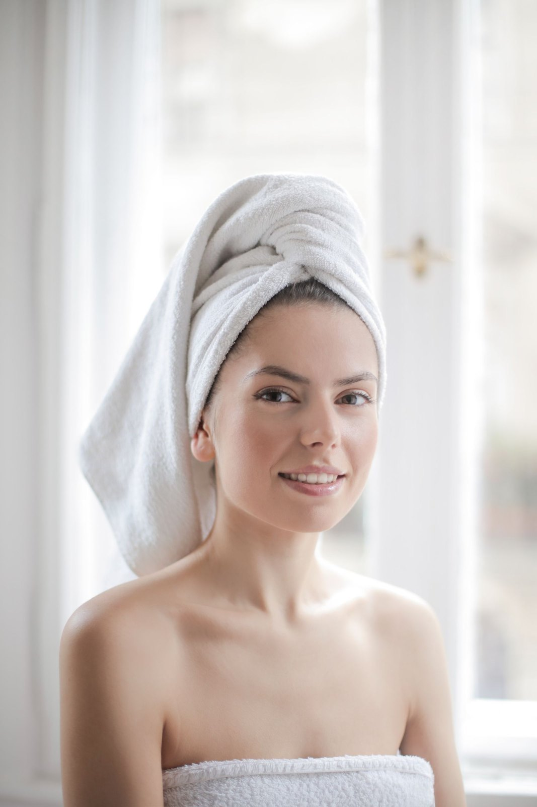
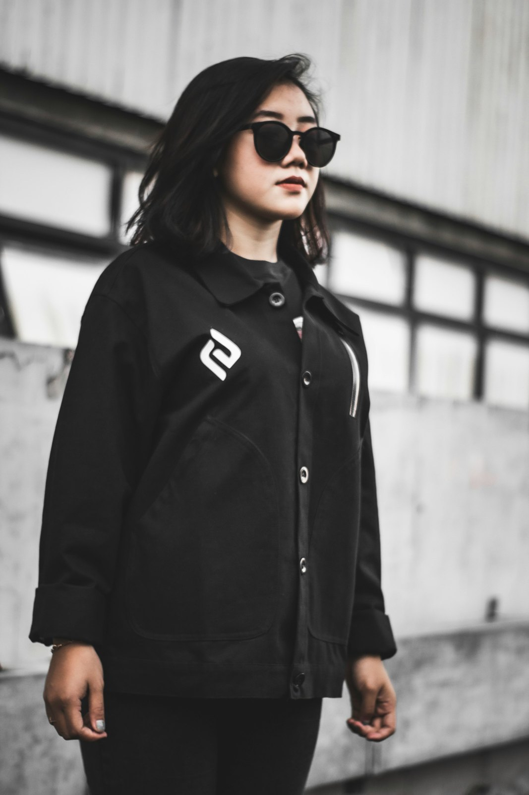
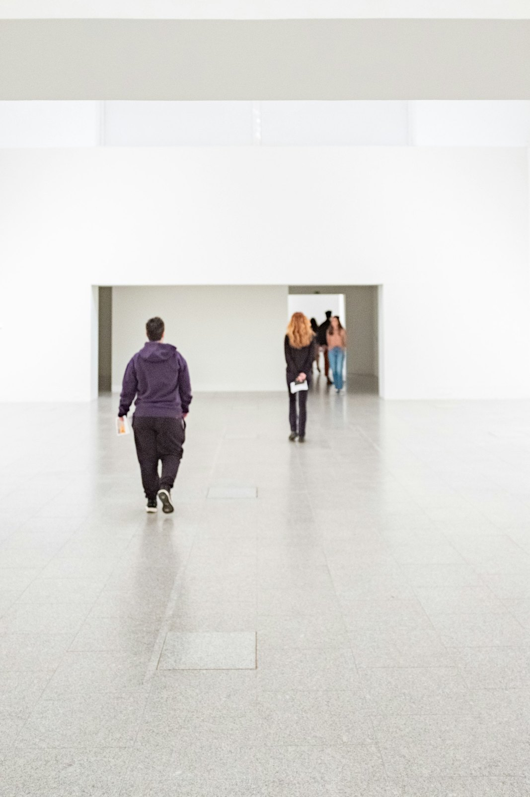

Il metodo
@studio.ortica
Dal 2019
01.
02.
03.
Dopo la chiamata guardiamo i tuoi canali, come ti presenti e dove puoi crescere.



Partiamo con una chiacchierata per capire la tua attività, gli obiettivi e i dubbi.
Scegliamo le priorità e il modo più adatto per farti trovare.
Ti mandiamo un piano con strategia, lavori, tempi e i prossimi passi.